Psalms & David
David ist ein Medienserver für die Familie: Hörbücher, Musik, Podcasts und Radio auf dem eigenen Rechner, mit Profilen, Altersgrenzen und Wochenplan für Kinder. Psalms ist die App dazu für iPhone, iPad, Android, Mac und Linux.
Wichtig: Psalms ist nur der Player. Er braucht einen David-Server, den die Familie selbst betreibt. Ohne Server hat die App nichts abzuspielen (der Knopf „Try with demo data“ zeigt nur die Oberfläche, ohne jede Interaktion).
Was die App kann
- Hörbücher und Musik vom eigenen Server hören, mit Hörfortschritt auf allen Geräten
- Herunterladen zum Hören ohne Netz (Offline-Modus mit Abgleich)
- Podcasts abonnieren, Radio hören, Wiedergabelisten
- Schlagwörter und Filter, Suche, Profile für Kinder mit Altersgrenze
- Kopplung per QR-Code oder Adresse mit einem Einmal-Code
So sieht es aus
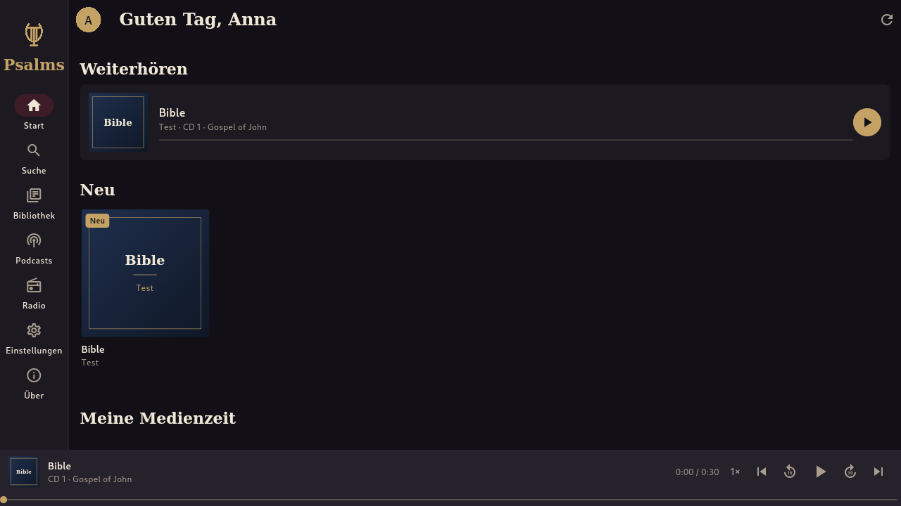
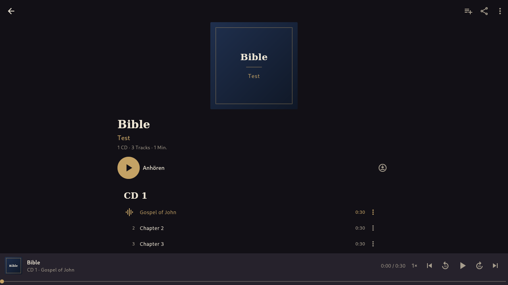
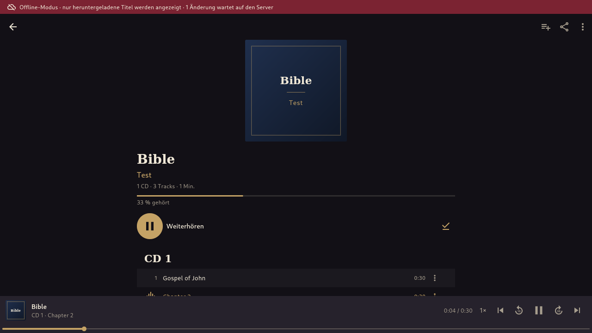
Die Bilder zeigen Testdaten aus dem automatischen Abnahmetest der App (Linux).
David im Browser

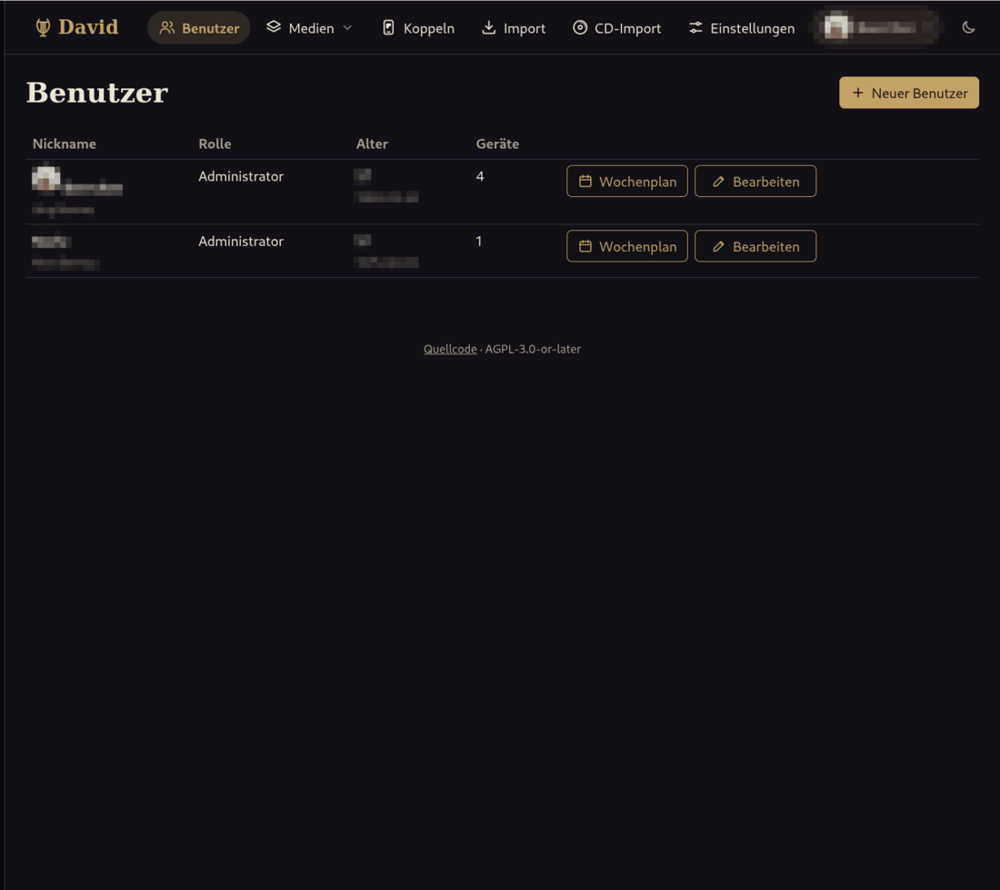

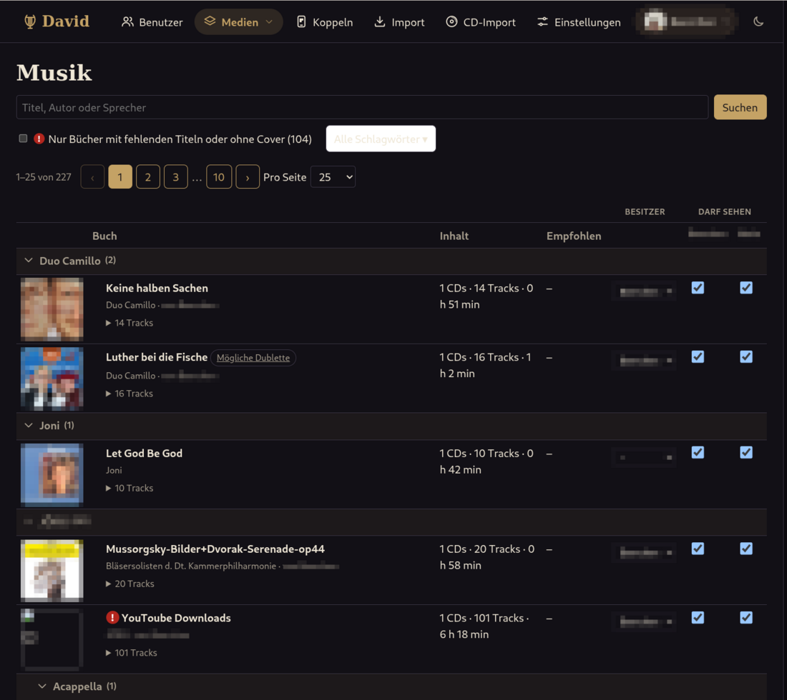

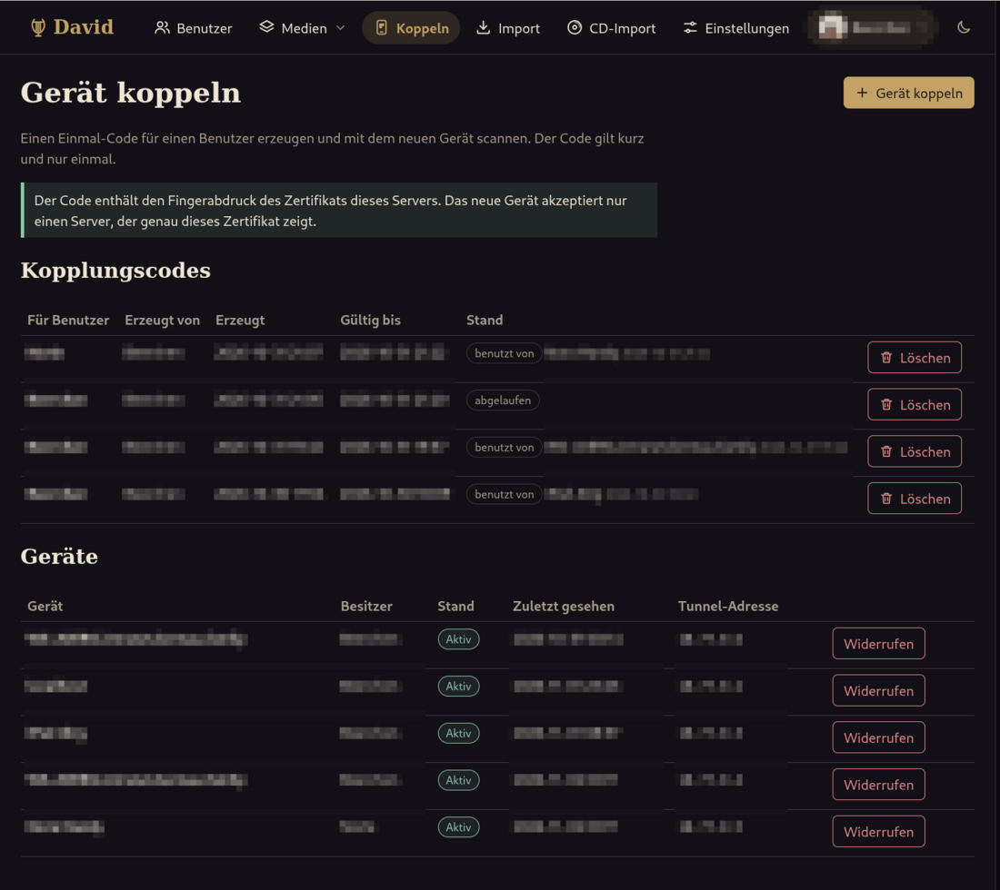

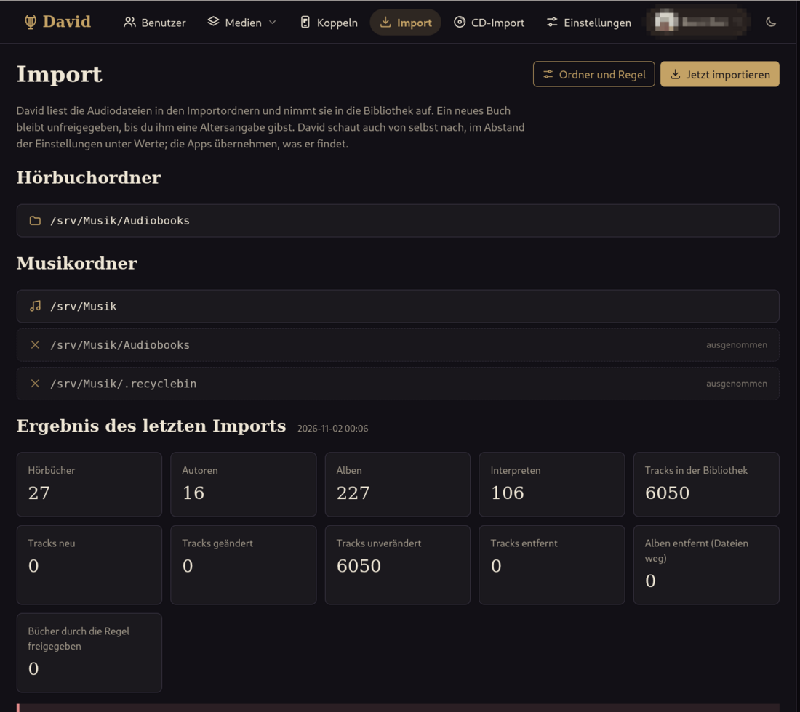

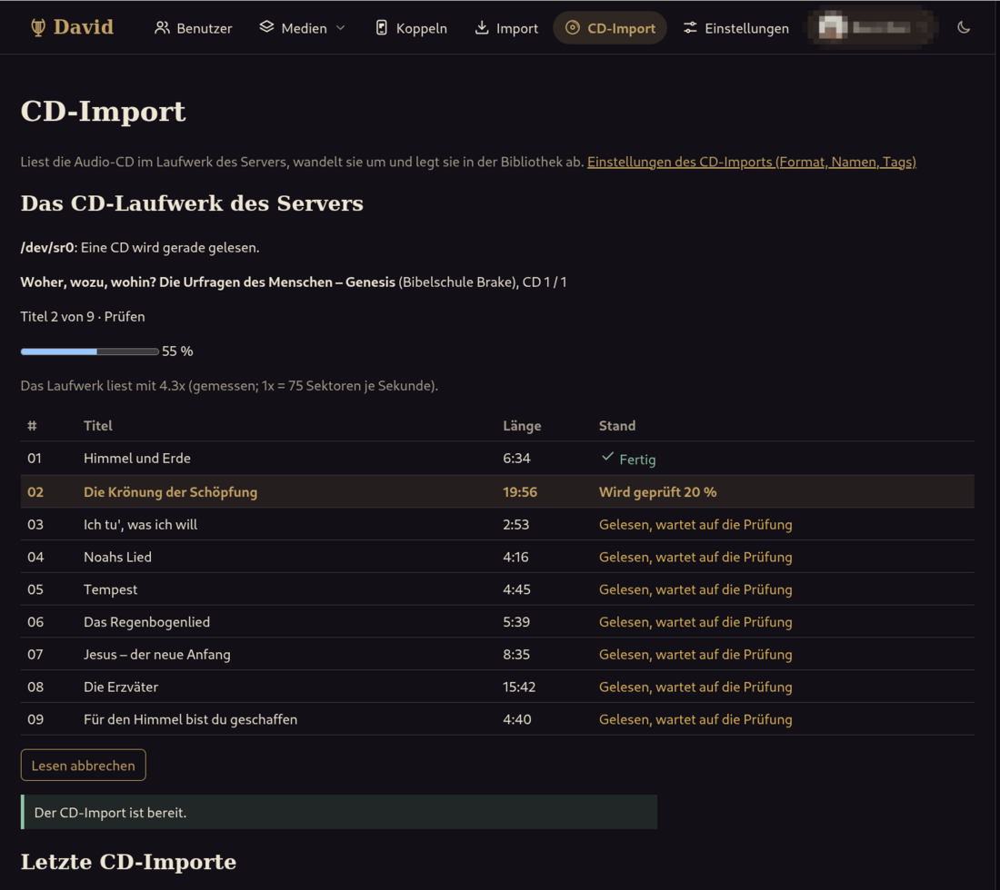

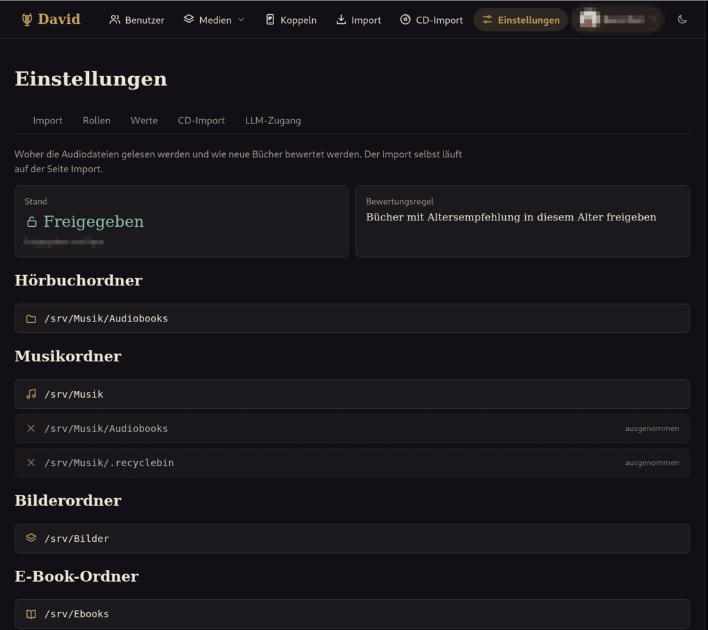
Die Verwaltung ist auf Deutsch und Englisch verfügbar. Namen, Geräte, Adressen und Cover sind unkenntlich gemacht.
Ausprobieren
Psalms und David sind in der Testphase. Hier gibt es die Downloads, und wir freuen uns, wenn du mittestest.
Weitere Informationen
Psalms & David
David is a media server for the family: audiobooks, music, podcasts and radio on your own computer, with profiles, age limits and a weekly schedule for children. Psalms is the app for it on iPhone, iPad, Android, Mac and Linux.
Important: Psalms is only the player. It needs a David server that your family runs itself. Without a server the app has nothing to play (the button "Try with demo data" only shows the screens without any interactions).
What the app does
- Listen to audiobooks and music from your own server, with your progress on every device
- Download for listening without a network (offline mode with synchronisation)
- Subscribe to podcasts, listen to radio, playlists
- Labels and filters, search, profiles for children with an age limit
- Pair by QR code or address with a one-time code
What it looks like
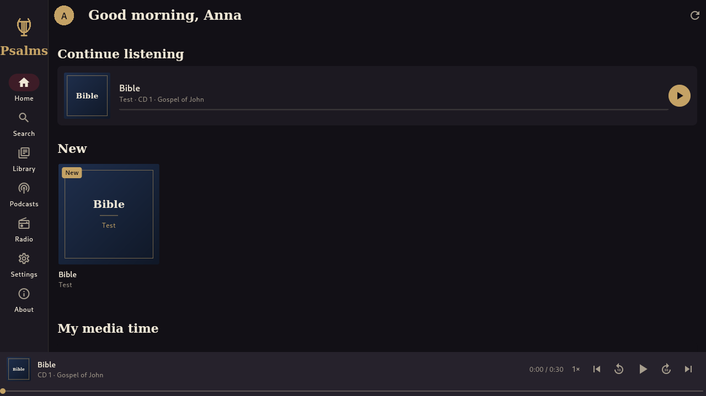
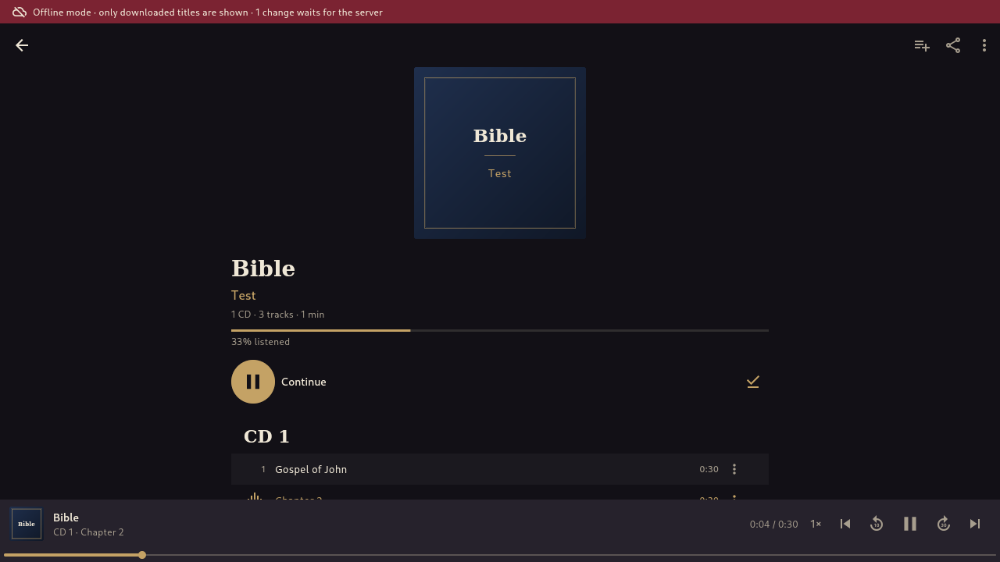
The pictures show test data from the automatic acceptance test of the app (Linux).
David in the browser
The administration is available in German and English (the pictures are the German page). Names, devices, addresses and covers are blurred.
Try it
Psalms and David are in a test phase. The downloads are here, and we would be glad if you tested with us.